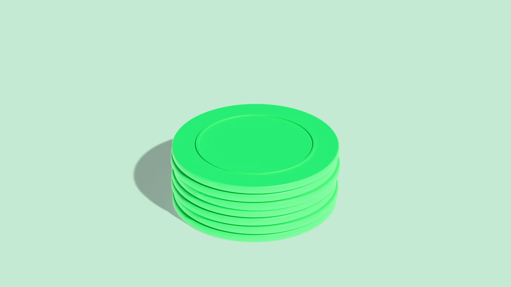
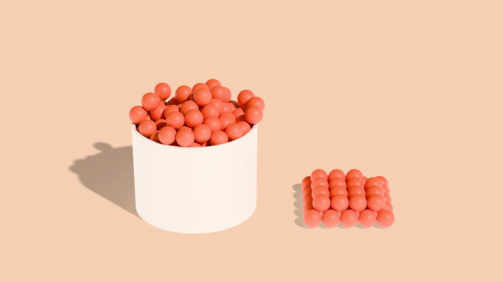
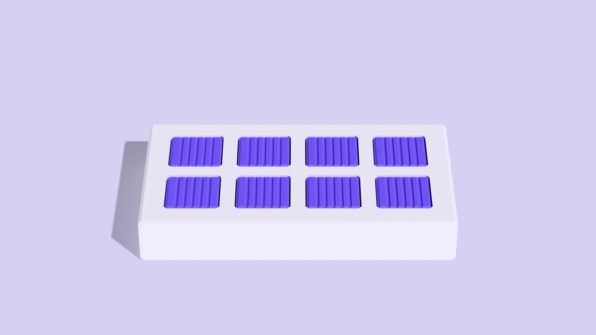

About
Reclaim was built on one fact:
Money that leaves
by mistake leaves
a record.
Why Reclaim exists, what we believe about accounts payable, and the published research behind it. Every figure on this page links to the organization that published it.
Who we are
We build one thing
and build it properly.
Reclaim reads the records your accounting system already holds — bills, payments, vendors, credits — and shows where the same invoice went out twice, where a payment came to more than the bill, and where a credit was issued and never used. Then, with your approval, it asks the vendor for the money back and follows the case until it has actually arrived.

The same invoice, out twice.
More than the bill asked for.
Issued, and never used.
First principles
What we believe.
Five things we hold to, and build everything else from.
Mistakes in accounts payable are normal, not rare.
APQC's benchmark of 1,686 organizations puts duplicate or erroneous payments at 1.5% of all disbursements at the median.
The evidence is already sitting in your own records.
Nothing has to be reconstructed. The bill, the payment and the credit are already in the books your system keeps today.
A number without the row behind it is only a guess.
Every result names the records behind it and the fields that matched. If we can't point at it, we don't claim it, and a promised refund isn't money back until it arrives.
Access should be the least anyone asks for.
Reclaim works from files you upload, with no connection to your accounting system. It can't change your books or move money, and AI only ever sees what one task needs.
The decision always stays with you, start to finish.
Nothing goes to a vendor until you approve it, and disputes come back to you. What to raise, what to write off and what to leave alone is your call throughout.
Accounts payable · Ardent Partners
Accounts payable is where a company's money actually leaves, and it is also where the work is most repetitive. Nearly one invoice in five needs a person to step in.
- Invoice exceptions18.4%
The average invoice exception rate.
Ardent Partners - Per invoice$9.84
The average cost of processing a single invoice.
Ardent Partners
Those are rates, not accidents. They repeat every year, and the records that would show them are already sitting in the books. What has been missing is a plain way to read those records, point at the rows, and see the money through to the point where it is actually back.
That is what we build.
We would rather show you three findings you can check than thirty you have to believe.
A number on a screen means nothing until you can open the row behind it, see the two records side by side, and decide for yourself whether it is worth chasing. That is the only kind of number worth having.

Don't just find the money.
Reclaim it.
Upload an export and see what your own records show.
-
Never changes your books
Reclaim works from the records you give it. It cannot move money or alter your ledger.
-
Nothing sent without you
Every message to a vendor waits for your approval. Nothing reaches a vendor until you say so.
-
Refunds come to you
Refunds and credits go straight to you. Reclaim never holds recovered funds.